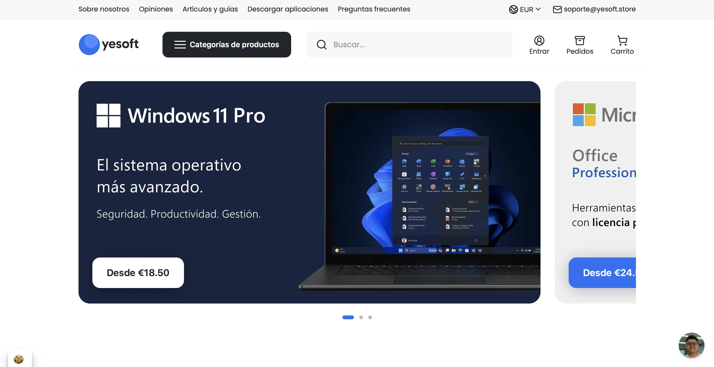
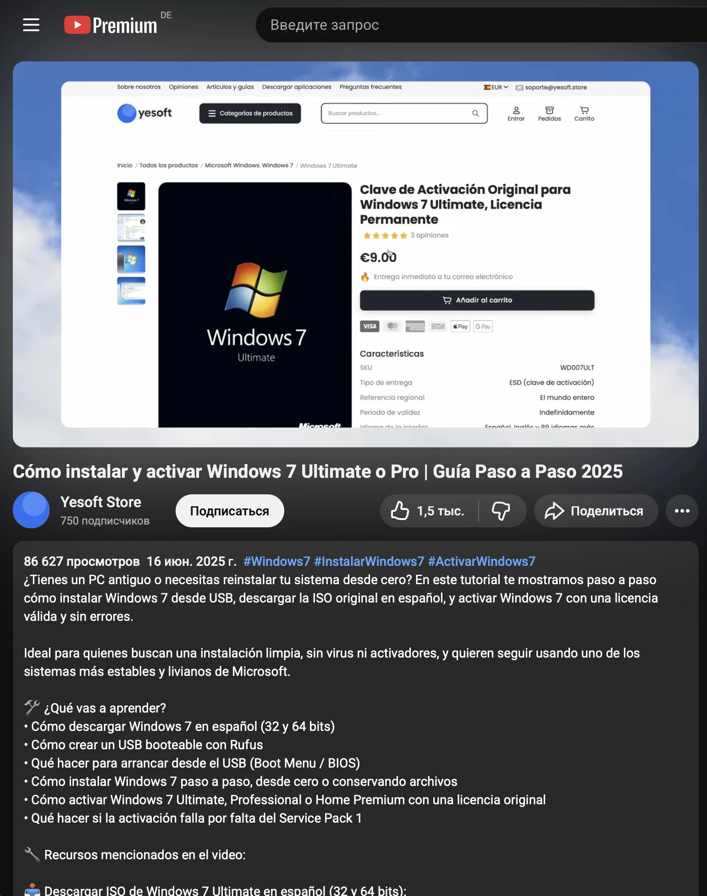
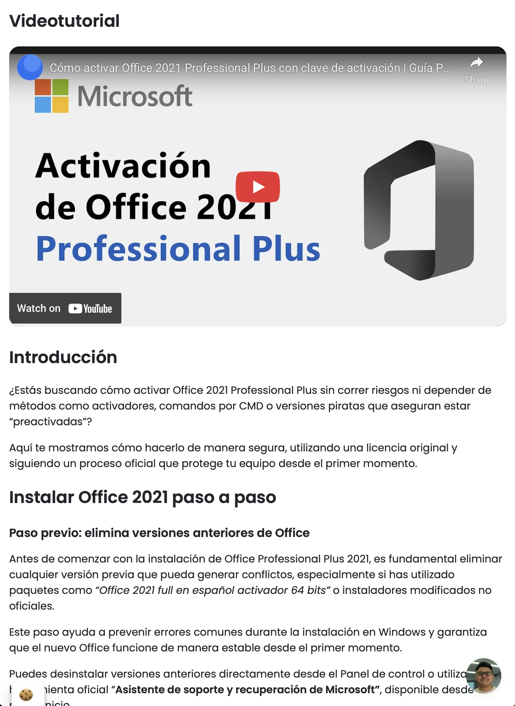

Кейс // 004
YESOFT: МУЛЬТИЯЗЫЧНЫЙ
E-COMMERCE
О ПРОЕКТЕ
YESOFT STORE — международный дискаунтер программного обеспечения, оперирующий на рынках Испании и Латинской Америки, с планами экспансии в DACH-регион (Германия) и другие европейске страны. Проект изначально задумывался как технологический бенчмарк: создание глобального ритейл-бизнеса, где рутинные контентные и SEO-процессы управляются ИИ-агентами.
ЗАДАЧА
Классический выход E-com проекта на новые рынки требует колоссальных бюджетов на локализацию. Клиенту нужно было развернуть сотни страниц под каждый продукт: коммерческие описания, загрузочные хабы и детальные инструкции. При этом контент должен был строго учитывать культурный контекст (например, фокус на легальность в Германии и доступность в Испании). Проводить SEO-оптимизацию, перевод и запись видеотуториалов традиционным ручным трудом было экономически нецелесообразно.



РЕШЕНИЕ
NEIROFACTURA спроектировала автономную мультиязычную фабрику контента с подходом human-in-the-loop:
SEO-архитектура. Мы подключили ИИ-агентов к данным через MCP-серверы (Model Context Protocol). Система автономно занимается подбором семантики и кластеризацией запросов. Человек лишь контролирует и валидирует результат, что кратно ускоряет работу и дает недостижимое для ручного сбора качество структуры.
Локализация смыслов. Агенты генерируют посадочные страницы и гайды, автоматически меняя позиционирование: от акцента на "Dauerlizenz" (вечная лицензия) для немцев до отработки возражений по пиратским активаторам для испанцев.
Гибридный видеопродакшн. Для создания инструкций мы внедрили пайплайны, которые берут на себя генерацию сценариев и нативную ИИ-озвучку с идеальным региональным акцентом. За командой остается только запись скринкастов и финальный ручной монтаж, что сокращает цикл производства видео в разы.
SEO-архитектура. Мы подключили ИИ-агентов к данным через MCP-серверы (Model Context Protocol). Система автономно занимается подбором семантики и кластеризацией запросов. Человек лишь контролирует и валидирует результат, что кратно ускоряет работу и дает недостижимое для ручного сбора качество структуры.
Локализация смыслов. Агенты генерируют посадочные страницы и гайды, автоматически меняя позиционирование: от акцента на "Dauerlizenz" (вечная лицензия) для немцев до отработки возражений по пиратским активаторам для испанцев.
Гибридный видеопродакшн. Для создания инструкций мы внедрили пайплайны, которые берут на себя генерацию сценариев и нативную ИИ-озвучку с идеальным региональным акцентом. За командой остается только запись скринкастов и финальный ручной монтаж, что сокращает цикл производства видео в разы.
РЕЗУЛЬТАТЫ
Архитектура доказала, что глобальная экспансия больше не привязана к размеру штата. Клиент получил инфраструктуру, позволяющую разворачивать новые языковые версии магазина с минимальными предельными издержками на продакшн.
4 ЯЗЫКА
Генерация всего контента и создание базы знаний
MCP
Для работы с семантикой на всех языках
300+
Страниц контента